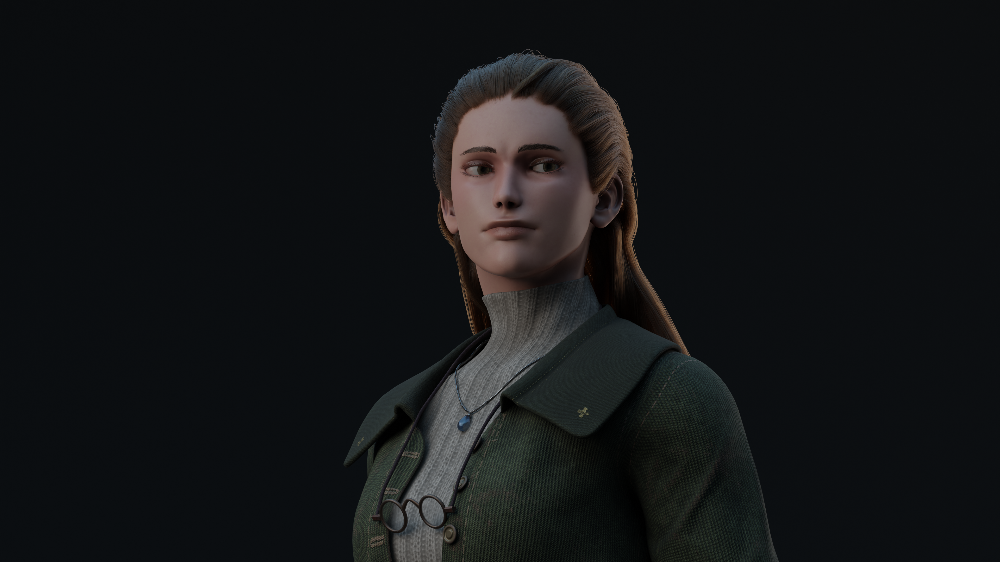

3D Modeling
2024
Ester Character

Like in my previous 3D modeling project, Coast Guard, I followed a similar workflow for this project. This time, I used Marvelous Designer to simulate the clothing. I also wanted to take the project a step further by creating a short animation, which gave me the opportunity to explore rigging and character animation in Blender.
...


The Process
I reused the base mesh from the Coast Guard and adapted it into a more feminine body. I then retopologized the model and created some of the clothing, such as the boots. Since I knew I would be animating the character, I paid particular attention to the joints and made sure the mesh could deform and bend realistically.
Marvelous Designer was especially useful for creating realistic clothing by simulating how fabric folds and behaves. I textured the model in Substance Painter, while the hair was created using Geometry Nodes in Blender.


Animation
The animation itself is fairly simple, but setting up the rig and weight painting the body, clothing, and face was a significant part of the process, as this was my first time working extensively with these techniques.